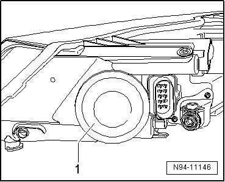
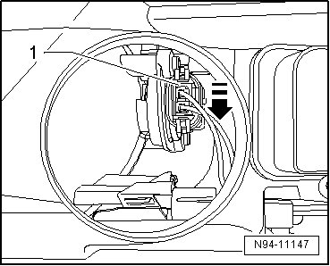
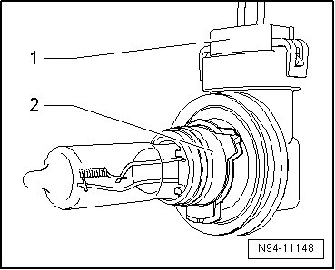

High Beam Bulb
Halogen Headlamps, from 12.06
High Beam Bulb
• Left High Beam Headlamp (M30) and Right High Beam Headlamp (M32) can be checked via output Diagnostic Test Mode (DTM) of Vehicle Electrical System Control Module (J519) --> [ Vehicle Electrical System Output Diagnostic Test Mode ] Initial Inspection and Diagnostic Overview.
• The illustrations show the procedure for removing and installing the right high beam headlamp bulb.
• The same procedure is used to remove and install the left high beam headlamp (M30) and right high beam headlamp (M32).
Removing
- Switch off ignition, switch off all electrical consumers and remove ignition key.
- Remove headlamp --> [ Headlamps ]. Headlamps
- Remove the cap - 1 - from the rear side of the headlamp.

- Turn the high beam headlamp - 1 - in the - direction of the arrow - and remove it from the reflector. Be careful of the connected wires when doing this.

- Release and disconnect the connector - 1 - and the remove high beam headlamp - 2 -.

• The lamp for fog lamp is joined permanently to lamp socket and cannot be replaced separately.
High beam headlamp bulb: H9 12 V, 65 W
Installing
Install in reverse order of removal, noting the following:
CAUTION!
When installing cap, ensure proper seating. It is destroyed by ingress of water into headlamp.
• Do not touch the glass of the light bulb, when installing. Your fingers will leave traces of grease on the glass which, when the lamp is switched on, will evaporate and cloud the glass.
- Check headlamp for function.
- Check and adjust headlamp aim if necessary .